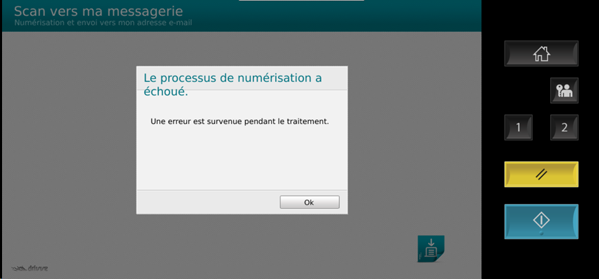
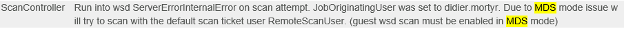
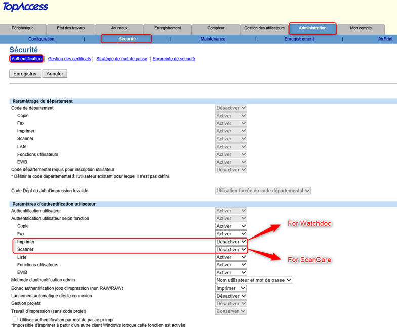
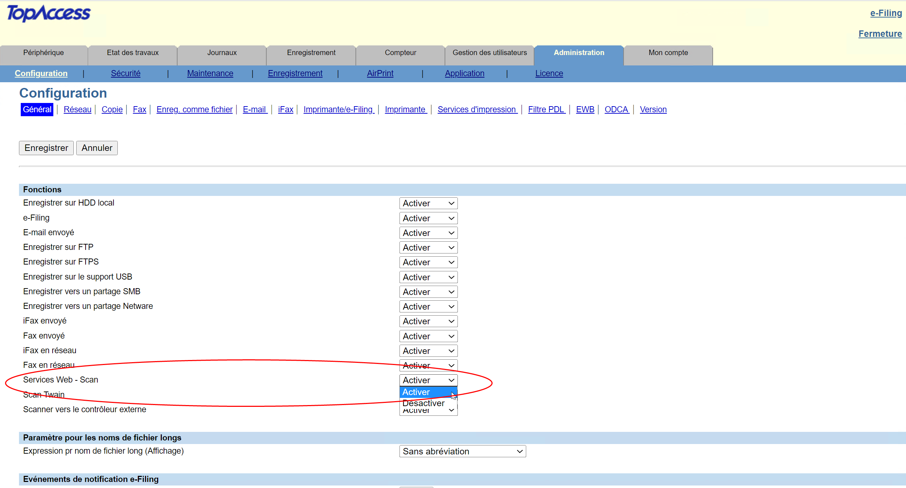
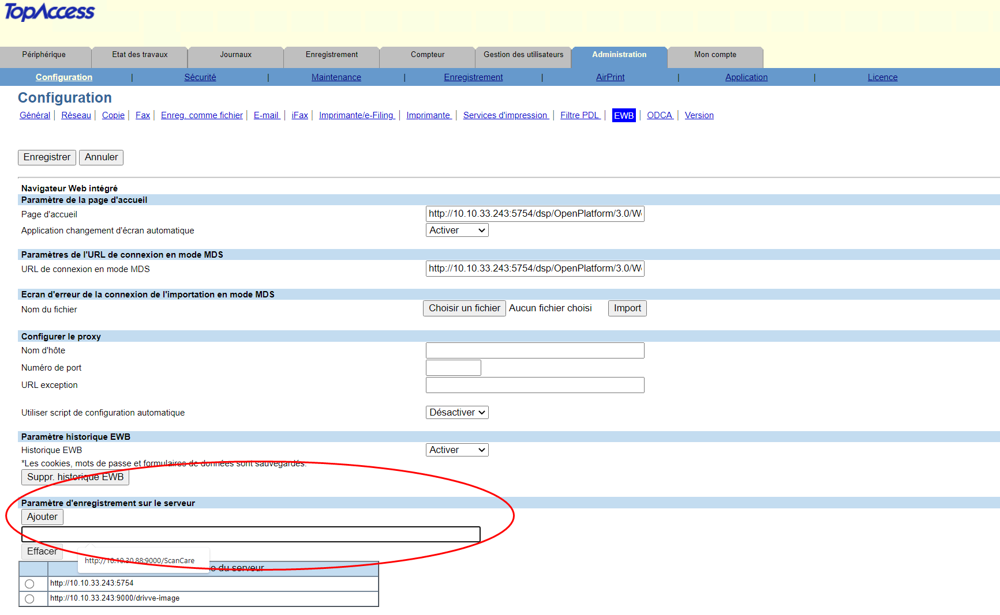
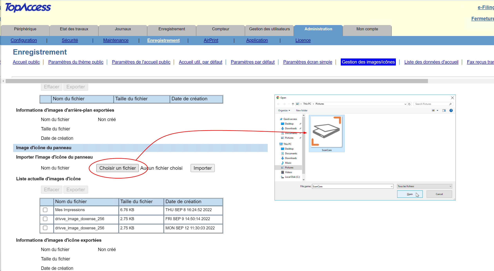
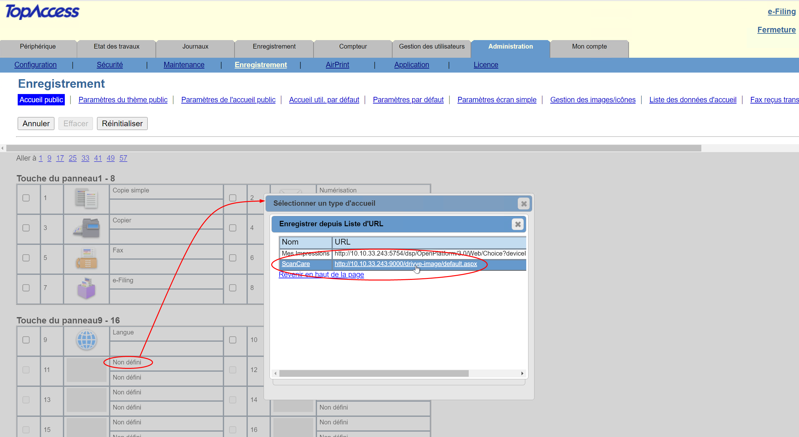
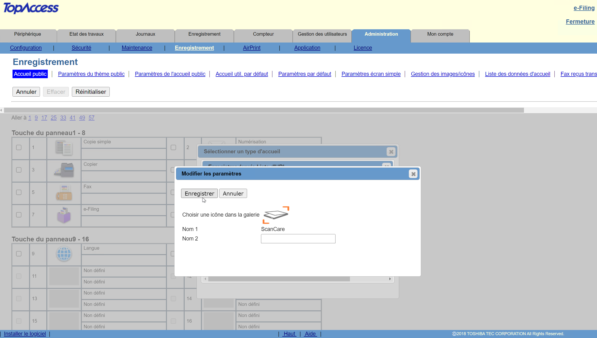
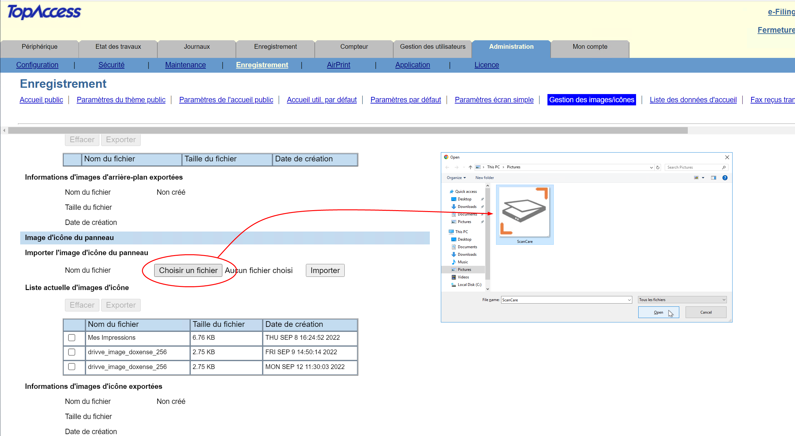

Installer et configurer manuellement Watchdoc ScanCare sur un périphérique Toshiba
Echec du processus de numérisation après installation du WES Toshiba
Contexte
Après installation du WES Toshiba sur un périphérique, lorsqu'un utilisateur active Watchdoc ScanCare®, un message indiquant que Le processus de numérisation a échoué apparaît :

Les fichiers traces révèlent que l'échec est lié à un mauvais paramétrage du mode MDS :

Cause
Cette erreur est due au WES qui modifie les paramètres d'authentification sur le périphérique d'impression, rendant la fonction "numérisation" impossible.
Résolution
Pour résoudre le problème, il convient de modifier les paramètres d'authentification sur le périphérique s'impression :
TopAccess
-
accédez au le site web d'administration du périphérique Toshiba (TopAccess) en tant qu'administrateur ;
-
dans le menu, cliquez sur Administration > Security > Authentication ;
-
dans la section Paramètres d'authentification utilisateurs , vérifiez lesparamètres suivants :
-
Authentification par fonction > Impression : désactivée.
-
Authentification par fonction > Scan: désactivée.

-
Installer et configurer manuellement Watchdoc ScanCare sur un périphérique Toshiba
Principe
Il arrive que l'installation automatique de Watchdoc® ScanCare sur un périphérique Toshiba échoue. Dans ce cas, il est nécessaire de procéder à une installation manuelle.
Prérequis
Pour enregistrer manuellement Watchdoc® ScanCare sur un appareil Toshiba, les conditions suivantes doivent être remplies :
-
le périphérique d'impression doit déjà avoir été déclaré via l'interface de configuration de Watchdoc® ScanCare ;
-
le périphérique d'impression doit disposer d'une licence Watchdoc® ScanCare.
-
Le module Toshiba Embedded Web Browser (EWB) doit être activé sur le périphérique d'impression (module dépendant de l'option "External Interface Enabler" (Code : GS-1020) qui concerne certains marchés et qu'il convient de vérifier auprès des représentants Toshiba).
-
Ports :
-
port 9000 ; port par défaut de Watchdoc® Scancare ;
-
Le port Watchdoc® Scancare réellement utilisé peut être différent du port 9000 par défaut. Vérifiez le port utilisé dans la configuration de votre serveur.
-
Procédure
Activer le service Web Scan
Pour installer manuellement ScanCare sur un périphérique Toshiba :
-
depuis un navigateur web, saisissez l'adresse IP du périphérique Toshiba ;
-
dans la page d'administration du périphérique Toshiba, connectez-vous en tant qu'administrateur ;
-
sous l'onglet Administration , cliquez sur Configuration > Général.
-
Dans la section Fonctions, liste déroulante Web Services Scan, sélectionnez Activer :

-
Cliquez sur le bouton Enregistrer pour valider l'activation de la fonction Scan.
Indiquer l'adresse du serveur (pour les dispositifs EWB)
Pour les dispositifs EWB, poursuivez la configuration :
-
sous l'onglet Administration > Configuration, cliquez sur l'entrée de menu EWB ;
-
dans le champ de la section Paramètre d'enregistrement sur le serveur, saisissez l'adresse IP du serveur ScanCare en respectant la syntaxe suivante :
http://[adresse-IP du serveur]:[port]/Drivve-image

-
Dans la section Liste d'URL pour l'écran de menu, cliquez sur le bouton Ajouter, puis complétez les champs suivants :
-
Dans le champ Nom de l'URL, saisissez le nom à afficher sur le bouton de l'écran du périphérique Toshiba utilisé pour lancer ScanCare.
-
Dans le champ URL, saisissez l'URL de ScanCare : http://[Adresse_IP_Serveur]:[port]/drivve-image/default.aspx (ex. : http://192.168.1.1:9000/drivve-image/default.aspx)
-
-
Cliquez sur le bouton Enregistrer pour valider l'ajout à l'écran d'accueil.
Ajouter l'icone de l'application ScanCare (pour les périphériques EBX)
Pour les périphériques EBX, poursuivez la configuration permettant de définir le logo d'accès à l'application ScanCare et le panneau du périphérique d'impression dans lequel l'afficher :
-
dans un dossier du serveur, enregistrez l’icône qui représente l'application ScanCare ;
-
dans l'interface d'administration du périphérique Toshiba, sous l'onglet Administration, cliquez sur Enregistrement > Gestion des images/icônes :
-
dans la section Image/icône du panneau, vérifiez dans la Liste actuelle d'images/icônes, si ScanCare apparaît ;
-
si ScanCare n'apparaît pas, cliquez sur le bouton Choisir un fichier et parcourez votre espace de travail pour sélectionner l'icone ScanCare ;

-
sélectionnez l'icone, puis, lorsque le nom du fichier s'affiche dans l'interface, cliquez sur le bouton Importer :
-
vérifiez dans la liste que le nom de votre fichier (ScanCare) s'affiche dans la Liste actuelle d'images/icônes .
Ajouter l'application ScanCare dans le panneau du périphérique (pour les périphériques EBX)
-
dans l'interface d'administration du périphérique Toshiba, revenez sous l'onglet Enregistrement, puis cliquez sur Accueil public :
-
dans l'un des panneaux, sélectionnez une touche non-définie, puis cliquez sur Non défini ;
-
depuis l'interface Sélectionner un type d'accueil, cliquez sur Enregistrer depuis liste d'URL :

-
dans la boîte Modifier les paramètres qui s'affiche, cliquez sur Choisir une icône dans la galerie
-
sélectionnez l'icone à associer à ScanCare, puis cliquez sur Enregistrer pour valider votre choix.

-
dans l'interface des panneaux, cochez la case pour sélectionner l'application ScanCare.
-
Cliquez sur le bouton Réinitialiser.

-
Rendez-vous sur le périphérique Toshiba et redémarrez-le.